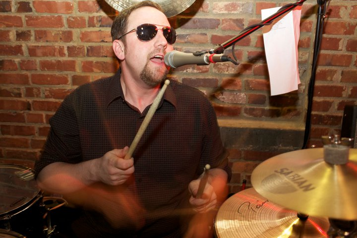
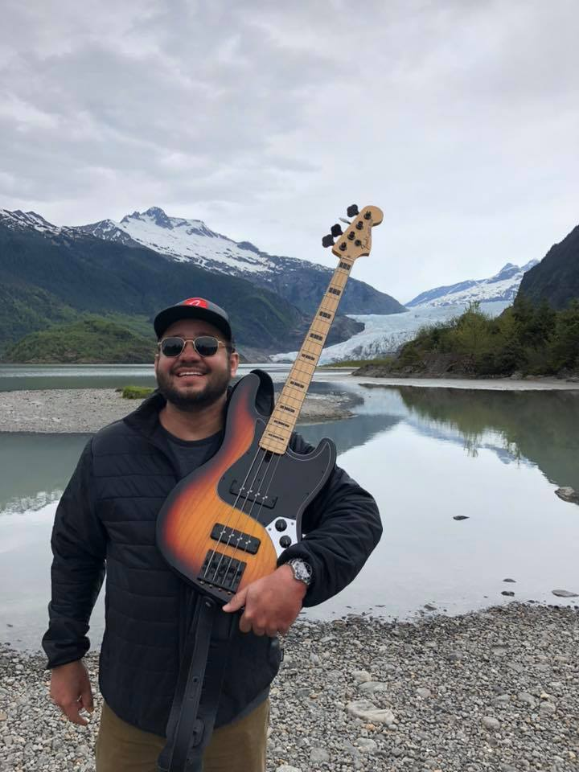

Nabil has been playing guitar for over 20 years and gigging in Seattle for 15. He is a structural engineer by day, and a band leader by night. You'll also catch him running 5k races on the weekends. Aside from Vote for Pedro, Nabil is in an original band with his brother Justin, Buckets of Rain, and he plays solo acoustic shows around the greater Seattle area.
Jeff plays many instruments but Pedro union rules dictate a maximum of two per band member, so he chose keys and sax. If you're lucky, you see him play both at the same time! Jeff sings lead on some Pedro cover songs, such as: "Hey Ya" by OutKast, "Sunday Morning" by Maroon 5 & "Lonely Boy" by The Black Keys.

Steve
Damm
Drums & Vocals
Keeps Time and Drops Rhymes
Wants to Pet your Dog (if that's Cool with You)
Steve keeps everyone in time and has the antics of a superhero. A comedian at heart, he brings a high energy and a personal touch to the show. Just don't ever bring a whistle. Steve sings lead on some Pedro cover songs, such as: "You Shook Me All Night Long" by ACDC, "Superstition" by Stevie Wonder, & "Sweet Home Alabama" by Lynyrd Skynyrd.

Tracy
Wilkinson
Bass, Trumpet, Harmonica & Vocals
"How Hard Could It Be?"
Other Aliases: [REDACTED]
This is Tracy on vacation with one of his favorite bass guitars. If he not playing bass, or helping build airplanes at Boeing, he's traveling with his bass.
Tracy sings lead on some Pedro cover songs, such as: "Purple Rain" by Prince, "She Came in Through the Bathroom Window" by The Beatles, & "Folsom Prison Blues" by Johnny Cash.